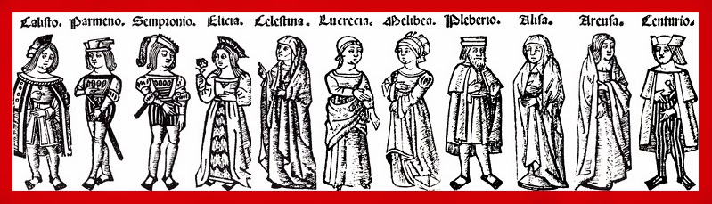
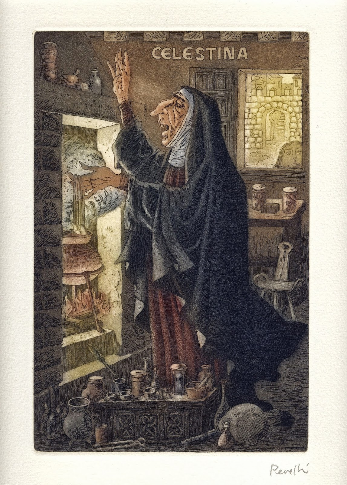
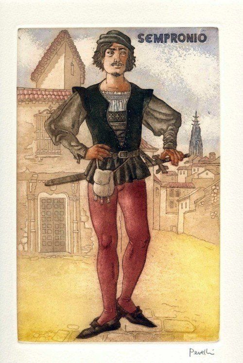
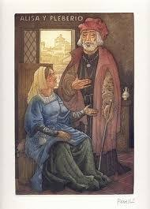
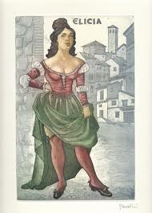
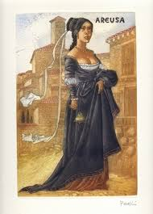
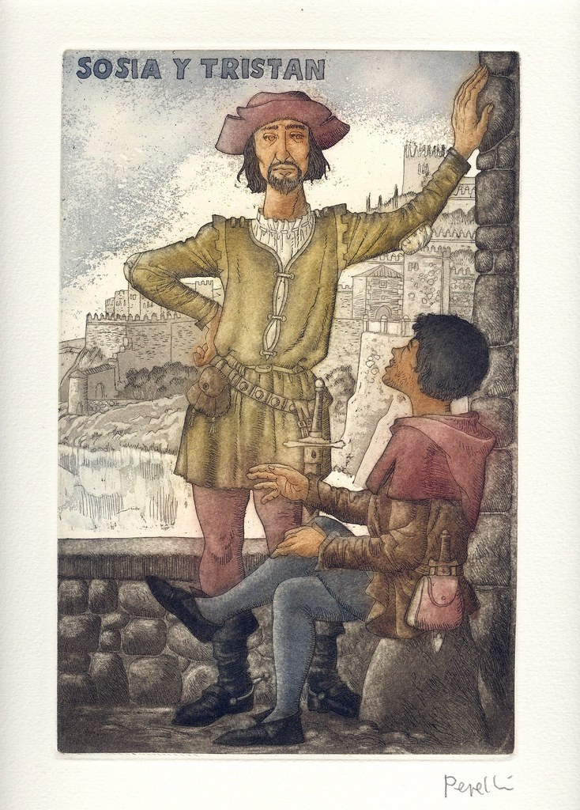
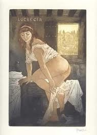

Personajes
- Introducción
- Personajes
I. Introducción
En La Celestina se ven reflejados los distintos cambios que sufrió la sociedad al pasar de una mentalidad medieval a un renacentista, ganando peso ideas y conceptos como el amor, el placer y la sensualidad, entre otros aspectos más terrenales. Todo esto, se puede discernir en esta historia gracias a lo que sucede entre un joven noble llamado Calisto, una joven de alta cuna llamada Melibea y los tejemanejes que lleva a cabo la hechicera y alcahueta conocida como Celestina para lograr unir a estos dos jóvenes. Para comenzar con este resumen breve de las características de los personajes de La Celestina, hablaremos sobre el hecho de que en esta obra están muy bien diferenciados dos tipos de personajes, los que tienen más peso en las tramas principales y los que se observan en las tramas secundarias. Así, los personajes de La Celestina se dividen en personajes principales y secundarios y, como es habitual en todas las historias, aunque el peso de la obra recae sobre los primeros, sin la aparición de los secundarios, las tramas principales perderían detalles e incluso algo de sentido. De este modo, en esta historia encontramos los siguientes personajes.
II. Personajes
A. Personajes Principales
1. Calisto

Se caracteriza por ser un romántico empedernido, con mucha pasión y locura por su amada y representante del amor cortés; sin embargo, también refleja mucha inseguridad y egoísmo, lo que le hace perder fácilmente el ánimo y la firmeza. A través de él se puede apreciar el peligro que conlleva la pasión y amor extremista, pues son estos sentimientos los que lo conducen a llevar a cabo acciones que lo convierten en un personaje trágico. Sus únicos intereses son el amor y la codicia, por lo que utilizó a sus criados y a la hechicera alcahueta para el cumplimiento de sus deseos. Así fue como Calisto acudió a Celestina, una vieja hechicera que lo ayuda a que el amor de este joven sea correspondido. Al final de la obra Calisto sufre un accidente que acaba con su vida: cae por las escaleras mientras huye de la casa de su amada, Melibea.
2. Melibea

Comienza siendo una joven oprimida por las obligaciones sociales que no le permitían vivir plenamente el amor de Calisto. No obstante, al avanzar la novela este personaje evoluciona psicológicamente y se revela que su personalidad no es realmente de fácil opresión, y pronto se encuentra con su amor; luego de ese encuentro queda completamente enamorada. Melibea, al igual que el resto de los personajes, se muestra muy individualista, preocupada por actuar de manera que pueda obtener lo que quiere. Es compleja y temerosa de defraudar a sus padres y perder su honra, por lo que no duda en actuar a sus espaldas para evitar conflictos graves. Es un personaje muy atractivo e interesante, con una pasión más carnal y menos literaria que la de Calisto, con rasgos físicos que representaban los ideales de belleza propios de la época. Posteriormente a la muerte su gran amor, Melibea sufre una crisis emocional muy fuerte, le confiesa a su padre el amorío que se había desarrollado entre ambos y se suicida.
3. Celestina
Es considerada la protagonista de la obra. Aunque esta gire en torno al amor de los dos jóvenes, Celestina pasó al recuerdo de los lectores del libro como la alcahueta del amor; no obstante, en la novela ejerce el papel de bruja, hechicera. Su motivación es el dinero, el éxito y la lujuria. Es sumamente inteligente, pero también es egoísta, falsa, desleal y codiciosa. Es de origen humilde, con un largo pasado atrás. En sus tiempos de juventud fue prostituta, adiestrada en ese mundo por la madre de Pármeno. Sin embargo, en el momento en el que se desarrolla la historia, ya con una edad más avanzada, ejercía otros oficios como “labrandera, perfumera, maestra de hacer afeites y hacer virgos, alcahueta y un poquito hechicera”. Se muestra orgullosa de su oficio durante toda la obra. No se arrepiente de su pasado, pues su larga trayectoria es lo que la ha llenado de tanta experiencia. Conoce todas las debilidades y pasiones humanas por lo que, con su gran conocimiento y astucia, controla psicológicamente a la mayoría de los personajes y es el hilo que une a los poderosos y a los criados. Pese a su gran sabiduría, su codicia es la que le dicta la muerte, hecho que ejemplariza el castigo a la avaricia: muere en manos de Sempronio y Pármeno —criados de Calisto— por no querer hacer entrega de un dinero.
B. Personajes Secundarios
1. Sempronio
Es el criado personal de Calisto, es su fiel consejero. Ayuda a su amo en cuanto necesite, pero no siempre busca caminos rectos. De hecho, lo convence para contratar a una alcahueta que le sirva para enamorar a la chica mientras él mantiene relación con Elicia, una de las prostitutas de Celestina.
2. Pármeno

Es otro criado del joven noble, aunque de fuerte moral y valores claros. Aun así, acaba siendo manipulado por Celestina y termina por sentir gran atracción por Areúsa, la otra prostituta que trabaja para la alcahueta.
3. Alisa y Pleberio
Son los padres de Melibea y el reflejo de un matrimonio burgués. Preocupados por mantener su posición social y seguir con las tradiciones de la época, no se veían involucrados en el drama que vivía su hija y no mantenían una relación estrecha. Alisa, muy autoritaria y despreocupada por Melibea, se ocupaba de mantener siempre atendido y a gusto a Pleberio, mientras que él se veía consumido por el trabajo. Pleberio es la encarnación del padre ausente en el día a día de su hija pero profundamente preocupado por su bienestar económico, pues se encargaba de que a Melibea no le faltara nada. La pareja confiaba plenamente en su hija, lo que le facilitaba a Melibea poder cumplir sus propios deseos sin tener que esforzarse por ocultar todo a sus padres, mientras que ellos le planificaban una boda con otro hombre de su misma clase, únicamente por intereses.
3. Elicia y Areúsa
 Elicia es familia de Celestina, viven juntas y es su pupila, al igual que Areúsa. Ambas son prostitutas y Elicia, a pesar de ser amante de Sempronio, mantenía relaciones con otros hombres sin remordimiento alguno. Elicia vive la vida sin preocupaciones excesivas por su futuro y aspectos que tengan que ver más allá del placer, hasta que Celestina muere y esta se ve obligada a tomar más responsabilidad y planificación. Areúsa, amiga de Elicia, se muestra muy individualista y rencorosa, ocupada únicamente en cumplir sus antojos. Como consecuencia de la petición de la hechicera, Areúsa se convirtió en amante de Pármeno cuando Centurio se fue a la guerra, pero su verdadero amor es el soldado.
4. Sosia y Tristán
Son fieles criados y amigos de Calisto luego de la muerte de Pármeno y Sempronio. Se trata de jóvenes ingenuos, humildes, muy leales y comprometidos con su amo, quienes lo protegen hasta el final de su vida. Sosia se enamoró profundamente de Areúsa y esta logró sacarle información acerca de Calisto y su gran amada, Melibea. Por su parte, Tristán es muy astuto y apegado a Calisto, por lo que la muerte de su amo lo afectó profundamente.
5. Lucrecia
Es familia de Elicia y fiel criada de Melibea. Siempre velaba por el bienestar de su ama y trató de advertirle acerca de los movimientos de Celestina. Fracasó en este intento, pero luego se ocupaba de guardar el secreto del amorío y se convirtió en cómplice de todas las escapadas de la pareja. Durante el desenlace de la obra, nunca mostró un acto de deslealtad hacia Melibea y sus padres; esto la diferenció mucho de los iniciales criados de Calisto, quienes se encargaron de engañarlo y sacar el mayor provecho posible. Sin embargo, se le acusaba de ser cómplice de las acciones de Celestina a cambio de polvos y lejía, únicamente por el hecho de no evitar definitivamente el plan de la hechicera.
6. Centurio

Es un soldado de muy mal carácter, conocido como rufián, malhechor y bravucón. Su gran amor es Areúsa, quien es su fiel amante, aunque Celestina la llevó a involucrarse con Pármeno mientras que Centurio se encontraba en la guerra. Incluso es considerado el responsable de la muerte de Calisto, después de que las prostitutas Elicia y Areúsa le pidieran asesinarlo para vengar la muerte de los criados de Calisto. Centurio no logró cumplir con los deseos de las damas, pues Tristán y Sosia lograron ahuyentarlo.